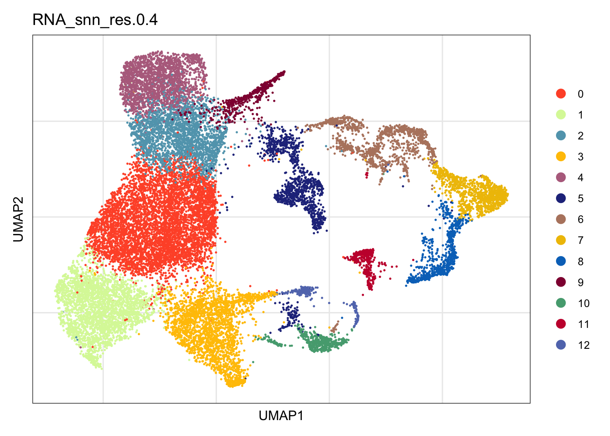
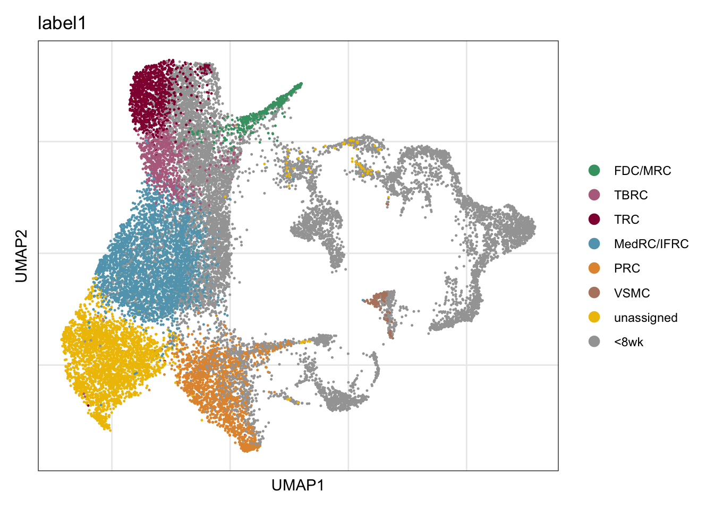
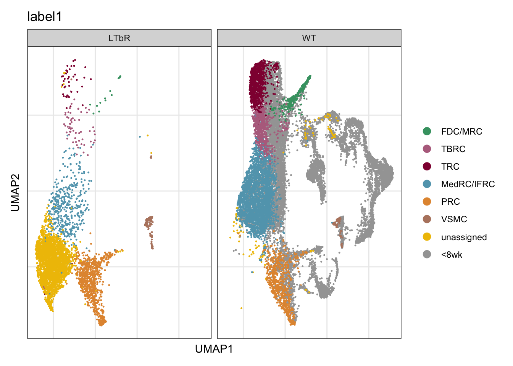
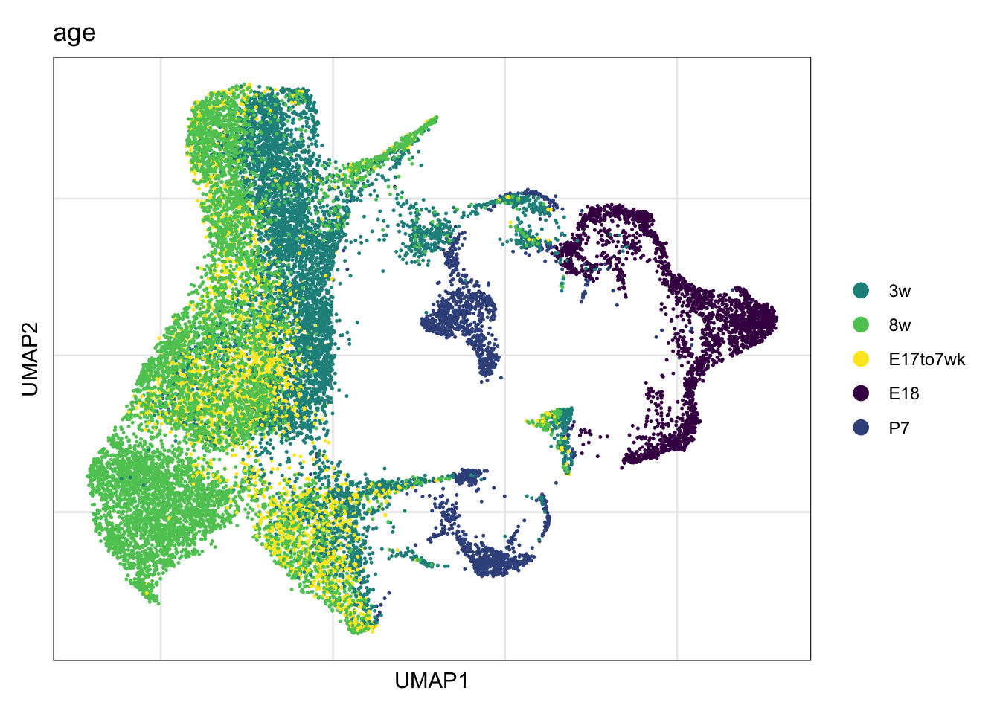
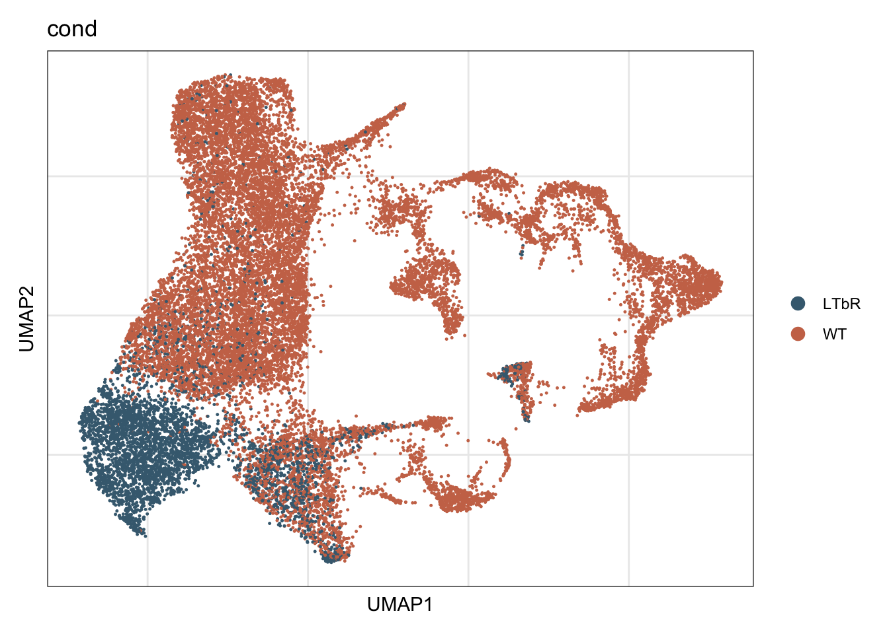
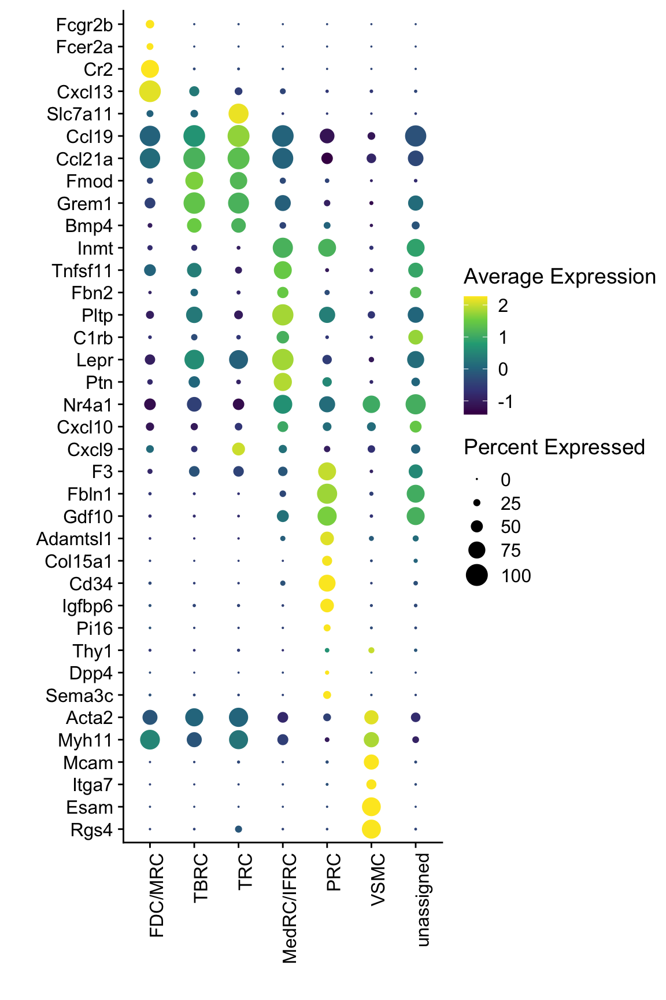
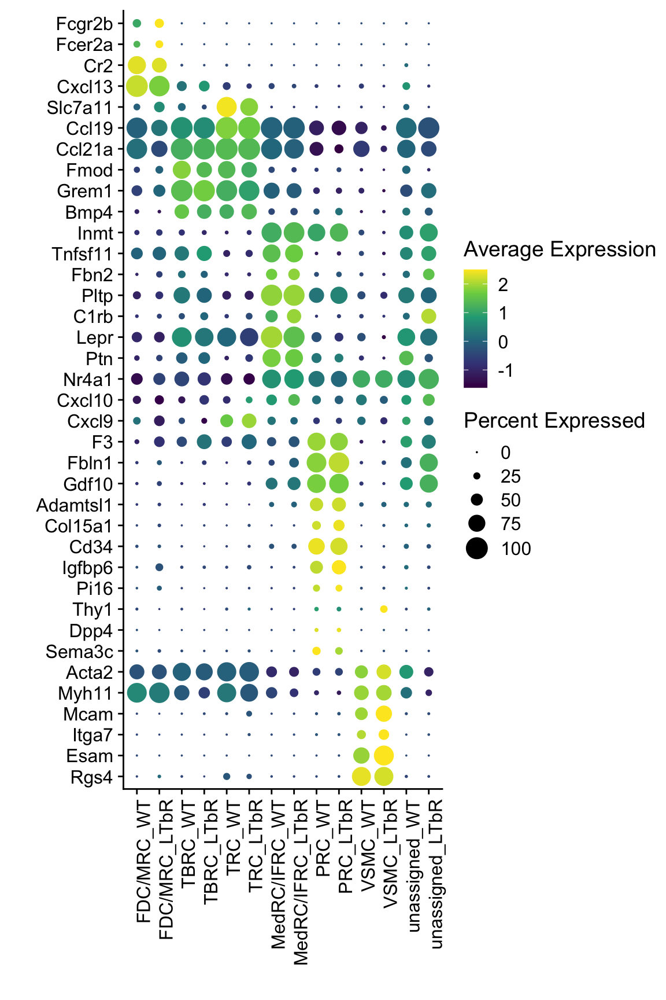
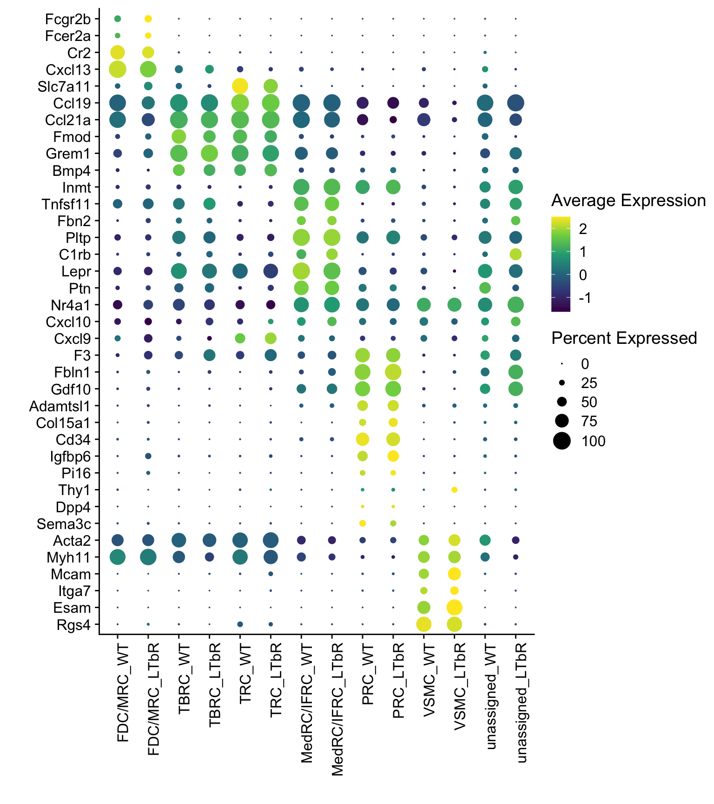
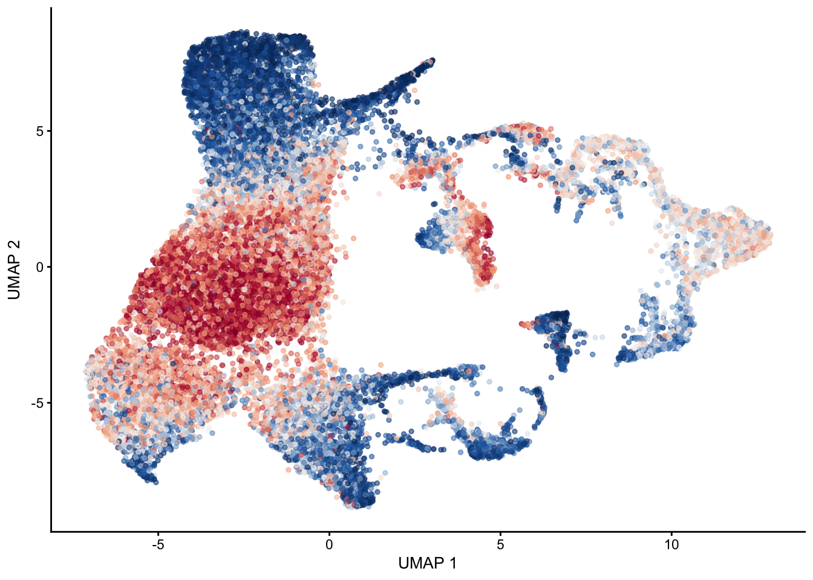
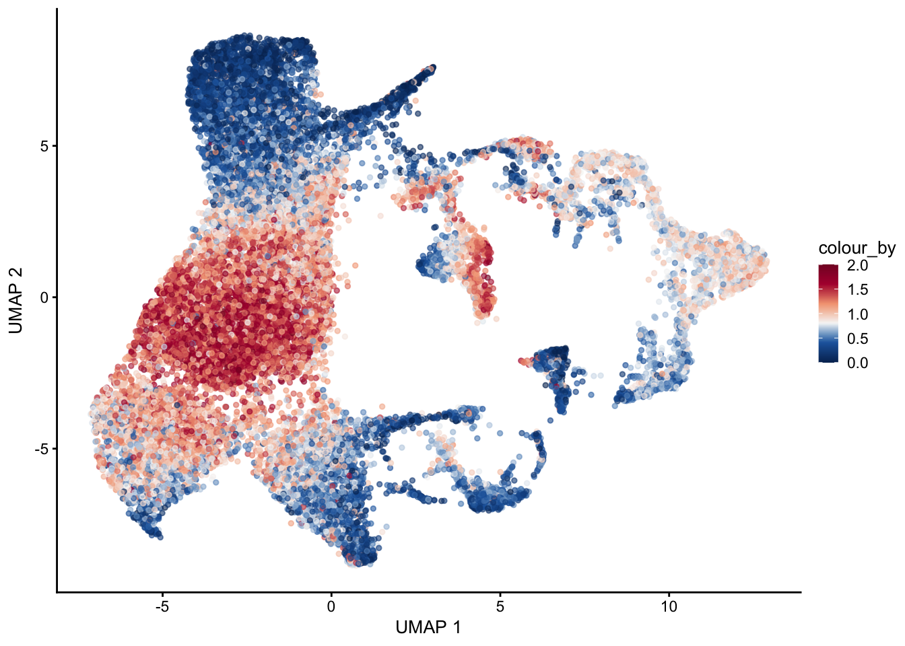

Last updated: 2025-06-10
Checks: 5 2
Knit directory: LNdev_PRC_rev/
This reproducible R Markdown analysis was created with workflowr (version 1.7.1). The Checks tab describes the reproducibility checks that were applied when the results were created. The Past versions tab lists the development history.
The R Markdown file has unstaged changes. To know which version of
the R Markdown file created these results, you’ll want to first commit
it to the Git repo. If you’re still working on the analysis, you can
ignore this warning. When you’re finished, you can run
wflow_publish to commit the R Markdown file and build the
HTML.
Great job! The global environment was empty. Objects defined in the global environment can affect the analysis in your R Markdown file in unknown ways. For reproduciblity it’s best to always run the code in an empty environment.
The command set.seed(20250513) was run prior to running
the code in the R Markdown file. Setting a seed ensures that any results
that rely on randomness, e.g. subsampling or permutations, are
reproducible.
Great job! Recording the operating system, R version, and package versions is critical for reproducibility.
Nice! There were no cached chunks for this analysis, so you can be confident that you successfully produced the results during this run.
Using absolute paths to the files within your workflowr project makes it difficult for you and others to run your code on a different machine. Change the absolute path(s) below to the suggested relative path(s) to make your code more reproducible.
| absolute | relative |
|---|---|
| /Users/immbio/Desktop/Project/Angelina/LNdev_PRC_rev/data/WT_allTime_mLNonly_WtplusLtbr_EYFPonly_seurat.rds | data/WT_allTime_mLNonly_WtplusLtbr_EYFPonly_seurat.rds |
Great! You are using Git for version control. Tracking code development and connecting the code version to the results is critical for reproducibility.
The results in this page were generated with repository version 8718892. See the Past versions tab to see a history of the changes made to the R Markdown and HTML files.
Note that you need to be careful to ensure that all relevant files for
the analysis have been committed to Git prior to generating the results
(you can use wflow_publish or
wflow_git_commit). workflowr only checks the R Markdown
file, but you know if there are other scripts or data files that it
depends on. Below is the status of the Git repository when the results
were generated:
Ignored files:
Ignored: .DS_Store
Ignored: .Rhistory
Ignored: .Rproj.user/
Ignored: analysis/.DS_Store
Unstaged changes:
Modified: analysis/adult_mLN_iLN.Rmd
Modified: analysis/mLN_WTvsLtbr.Rmd
Note that any generated files, e.g. HTML, png, CSS, etc., are not included in this status report because it is ok for generated content to have uncommitted changes.
These are the previous versions of the repository in which changes were
made to the R Markdown (analysis/mLN_WTvsLtbr.Rmd) and HTML
(docs/mLN_WTvsLtbr.html) files. If you’ve configured a
remote Git repository (see ?wflow_git_remote), click on the
hyperlinks in the table below to view the files as they were in that
past version.
| File | Version | Author | Date | Message |
|---|---|---|---|---|
| Rmd | 411b419 | angeldemartin | 2025-06-04 | june06.2 |
| html | 411b419 | angeldemartin | 2025-06-04 | june06.2 |
| Rmd | 1cf08f4 | angeldemartin | 2025-06-04 | june06 |
| html | 1cf08f4 | angeldemartin | 2025-06-04 | june06 |
fileNam <- "/Users/immbio/Desktop/Project/Angelina/LNdev_PRC_rev/data/WT_allTime_mLNonly_WtplusLtbr_EYFPonly_seurat.rds"
seurat <- readRDS(fileNam)colCond <- c("#446a7f", "#cb7457")
names(colCond) <- c("LTbR", "WT")
colAge <- c("#440154FF", "#3B528BFF", "#21908CFF", "#5DC863FF", "#FDE725FF")
names(colAge) <- c("E18" , "P7", "3w", "8w","E17to7wk")
colPal <- c("#DAF7A6", "#FFC300", "#FF5733", "#C70039", "#900C3F", "#b66e8d",
"#61a4ba", "#6178ba", "#54a87f", "#25328a",
"#b6856e", "#0073C2FF", "#EFC000FF", "#868686FF", "#CD534CFF",
"#7AA6DCFF", "#003C67FF", "#8F7700FF", "#3B3B3BFF", "#A73030FF",
"#4A6990FF")[1:length(unique(seurat$RNA_snn_res.0.4))]
names(colPal) <- unique(seurat$RNA_snn_res.0.4)
colDat <- colDat <- c(pal_npg()(10),pal_futurama()(12), pal_aaas()(10),
pal_jama()(8))[1:length(unique(seurat$dataset))]
names(colDat) <- unique(seurat$dataset)DimPlot(seurat, reduction = "umap", group.by = "RNA_snn_res.0.4",
cols = colPal)+
theme_bw() +
theme(axis.text = element_blank(), axis.ticks = element_blank(),
panel.grid.minor = element_blank()) +
xlab("UMAP1") +
ylab("UMAP2")
| Version | Author | Date |
|---|---|---|
| 1cf08f4 | angeldemartin | 2025-06-04 |
##assign label1
seurat$label1 <- "unassigned"
seurat$label1[which(seurat$RNA_snn_res.0.4 == "0")] <- "MedRC/IFRC" ## medRC plus IFRC mixed
seurat$label1[which(seurat$RNA_snn_res.0.4 == "2")] <- "TBRC"
seurat$label1[which(seurat$RNA_snn_res.0.4 == "3")] <- "PRC"
seurat$label1[which(seurat$RNA_snn_res.0.4 == "4")] <- "TRC"
seurat$label1[which(seurat$RNA_snn_res.0.4 == "9")] <- "FDC/MRC" ## FDC plus MRC mixed
seurat$label1[which(seurat$RNA_snn_res.0.4 == "11")] <- "VSMC"
seurat$label1[which(seurat$age %in% c("3w", "E18", "P7"))] <- "<8wk"
##order
seurat$label1 <- factor(seurat$label1, levels = c("FDC/MRC", "TBRC" ,"TRC", "MedRC/IFRC", "PRC", "VSMC", "unassigned","<8wk"))
table(seurat$label1)
FDC/MRC TBRC TRC MedRC/IFRC PRC VSMC unassigned <8wk
356 871 1077 3600 1673 189 2962 10515 colLab <- c("#42a071", "#900C3F","#b66e8d", "#61a4ba", "#424671", "#003C67FF",
"#e3953d", "#714542", "#b6856e", "#EFC000FF", "#a4a4a4")
names(colLab) <- c("FDC/MRC", "TRC", "TBRC", "MedRC/IFRC", "MedRC" , "actMedRC",
"PRC", "Pi16+RC", "VSMC", "unassigned", "<8wk")DimPlot(seurat, reduction = "umap", group.by = "label1",
cols = colLab)+
theme_bw() +
theme(axis.text = element_blank(), axis.ticks = element_blank(),
panel.grid.minor = element_blank()) +
xlab("UMAP1") +
ylab("UMAP2")
| Version | Author | Date |
|---|---|---|
| 1cf08f4 | angeldemartin | 2025-06-04 |
DimPlot(seurat, reduction = "umap", group.by = "label1",
cols = colLab, split.by = "cond")+
theme_bw() +
theme(axis.text = element_blank(), axis.ticks = element_blank(),
panel.grid.minor = element_blank()) +
xlab("UMAP1") +
ylab("UMAP2")
| Version | Author | Date |
|---|---|---|
| 1cf08f4 | angeldemartin | 2025-06-04 |
DimPlot(seurat, reduction = "umap", group.by = "age",
cols = colAge)+
theme_bw() +
theme(axis.text = element_blank(), axis.ticks = element_blank(),
panel.grid.minor = element_blank()) +
xlab("UMAP1") +
ylab("UMAP2")
| Version | Author | Date |
|---|---|---|
| 1cf08f4 | angeldemartin | 2025-06-04 |
DimPlot(seurat, reduction = "umap", group.by = "cond",
cols = colCond, shuffle=T)+
theme_bw() +
theme(axis.text = element_blank(), axis.ticks = element_blank(),
panel.grid.minor = element_blank()) +
xlab("UMAP1") +
ylab("UMAP2")
| Version | Author | Date |
|---|---|---|
| 1cf08f4 | angeldemartin | 2025-06-04 |
seurat_markers <- data.frame(gene=c("Fcgr2b","Fcer2a","Cr2","Cxcl13",
"Slc7a11", "Ccl19",
"Ccl21a", "Fmod", "Grem1", "Bmp4", "Inmt",
"Tnfsf11", "Fbn2",
"Pltp" ,"C1rb", "Lepr", "Ptn",
"Nr4a1", "Cxcl10", "Cxcl9",
"F3", "Fbln1", "Gdf10", "Adamtsl1",
"Col15a1", "Cd34",
"Igfbp6", "Pi16", "Thy1", "Dpp4", "Sema3c",
"Acta2", "Myh11", "Mcam", "Itga7", "Esam", "Rgs4"
))
genes <- data.frame(geneID=rownames(seurat)) %>%
mutate(gene=gsub(".*\\.", "", geneID))
markerAll <- seurat_markers %>% left_join(., genes, by="gene")## assign new slot
seurat$label1_plus_cond <- paste0(seurat$label1, "_", seurat$cond)
##order
seurat$label1_plus_cond <- factor(seurat$label1_plus_cond, levels = c("FDC/MRC_WT","FDC/MRC_LTbR", "TBRC_WT" ,"TBRC_LTbR", "TRC_WT" , "TRC_LTbR", "MedRC/IFRC_WT", "MedRC/IFRC_LTbR", "PRC_WT" ,"PRC_LTbR", "VSMC_WT" ,"VSMC_LTbR", "unassigned_WT" , "unassigned_LTbR"))
table(seurat$label1_plus_cond)
FDC/MRC_WT FDC/MRC_LTbR TBRC_WT TBRC_LTbR TRC_WT TRC_LTbR
342 14 807 64 1034 43
MedRC/IFRC_WT MedRC/IFRC_LTbR PRC_WT PRC_LTbR VSMC_WT VSMC_LTbR
3168 432 838 835 60 129
unassigned_WT unassigned_LTbR
113 2849 ## subset adult
table(seurat$age)
3w 8w E17to7wk E18 P7
6241 7693 3035 2510 1764 seuratA <- subset(seurat, age %in% c("8w", "E17to7wk"))
table(seuratA$cond)
LTbR WT
4366 6362 Idents(seuratA) <- seuratA$label1
levels(seuratA)[1] "FDC/MRC" "TBRC" "TRC" "MedRC/IFRC" "PRC" "VSMC" "unassigned"DotPlot(seuratA, assay="RNA", features = rev(markerAll$geneID), scale =T,
cluster.idents = F) +
scale_color_viridis_c() +
coord_flip() +
theme(axis.text.x = element_text(angle = 90, hjust = 1)) +
scale_x_discrete(breaks=rev(markerAll$geneID), labels=rev(markerAll$gene)) +
xlab("") + ylab("")
| Version | Author | Date |
|---|---|---|
| 411b419 | angeldemartin | 2025-06-04 |
Idents(seuratA) <- seuratA$label1_plus_cond
levels(seuratA) [1] "FDC/MRC_WT" "FDC/MRC_LTbR" "TBRC_WT" "TBRC_LTbR" "TRC_WT"
[6] "TRC_LTbR" "MedRC/IFRC_WT" "MedRC/IFRC_LTbR" "PRC_WT" "PRC_LTbR"
[11] "VSMC_WT" "VSMC_LTbR" "unassigned_WT" "unassigned_LTbR"DotPlot(seuratA, assay="RNA", features = rev(markerAll$geneID), scale =T,
cluster.idents = F) +
scale_color_viridis_c() +
coord_flip() +
theme(axis.text.x = element_text(angle = 90, hjust = 1)) +
scale_x_discrete(breaks=rev(markerAll$geneID), labels=rev(markerAll$gene)) +
xlab("") + ylab("") 
Idents(seuratA) <- seuratA$label1_plus_cond
levels(seuratA) [1] "FDC/MRC_WT" "FDC/MRC_LTbR" "TBRC_WT" "TBRC_LTbR" "TRC_WT"
[6] "TRC_LTbR" "MedRC/IFRC_WT" "MedRC/IFRC_LTbR" "PRC_WT" "PRC_LTbR"
[11] "VSMC_WT" "VSMC_LTbR" "unassigned_WT" "unassigned_LTbR"DotPlot(seuratA, assay="RNA", features = rev(markerAll$geneID), scale =T,
cluster.idents = F) +
scale_color_viridis_c() +
coord_flip() +
theme(axis.text.x = element_text(angle = 90, hjust = 1)) +
scale_x_discrete(breaks=rev(markerAll$geneID), labels=rev(markerAll$gene)) +
xlab("") + ylab("") 
sce <- as.SingleCellExperiment(seurat)
genes <- data.frame(geneID=rownames(sce)) %>% mutate(gene=gsub(".*\\.", "", geneID))
pal = colorRampPalette(c("#053061", "#2166ac", "#f7f7f7", "#f4a582", "#b2183c", "#85122d"))selGenes <- data.frame(gene=c("Tnfsf11", "Fbn2", "Pltp", "C1rb", "Lepr", "Ptn", "Nr4a1", "Inmt"))
signGenes <- genes %>% dplyr::filter(gene %in% selGenes$gene)
##make a count matrix of signature genes
sceSub <- sce[which(rownames(sce) %in% signGenes$geneID),]
cntMat <- rowSums(t(as.matrix(
sceSub@assays@data$logcounts)))/nrow(signGenes)
sceSub$sign <- cntMat
sceSub$sign2 <- sceSub$sign
sc <- scale_colour_gradientn(colours = pal(100), limits=c(0, 2))
sceSub$sign2[which(sceSub$sign > 2)] <- 2
##check max and min values
max(sceSub$sign)[1] 2.389673plotUMAP(sceSub, colour_by = "sign2", point_size = 1) + sc +
theme(legend.position = "none")
| Version | Author | Date |
|---|---|---|
| 1cf08f4 | angeldemartin | 2025-06-04 |
plotUMAP(sceSub, colour_by = "sign2", point_size = 1) + sc
date()[1] "Tue Jun 10 12:48:18 2025"sessionInfo()R version 4.4.0 (2024-04-24)
Platform: x86_64-apple-darwin20
Running under: macOS Ventura 13.7.6
Matrix products: default
BLAS: /Library/Frameworks/R.framework/Versions/4.4-x86_64/Resources/lib/libRblas.0.dylib
LAPACK: /Library/Frameworks/R.framework/Versions/4.4-x86_64/Resources/lib/libRlapack.dylib; LAPACK version 3.12.0
locale:
[1] en_US.UTF-8/en_US.UTF-8/en_US.UTF-8/C/en_US.UTF-8/en_US.UTF-8
time zone: Europe/Zurich
tzcode source: internal
attached base packages:
[1] grid stats4 stats graphics grDevices utils datasets methods base
other attached packages:
[1] ggsci_3.2.0 magrittr_2.0.3 tradeSeq_1.18.0
[4] RColorBrewer_1.1-3 slingshot_2.12.0 TrajectoryUtils_1.12.0
[7] princurve_2.1.6 NCmisc_1.2.0 VennDiagram_1.7.3
[10] futile.logger_1.4.3 ggupset_0.4.1 gridExtra_2.3
[13] DOSE_3.30.5 enrichplot_1.24.4 msigdbr_10.0.2
[16] org.Hs.eg.db_3.19.1 AnnotationDbi_1.66.0 clusterProfiler_4.12.6
[19] multtest_2.60.0 metap_1.12 scater_1.32.1
[22] scuttle_1.14.0 destiny_3.18.0 circlize_0.4.16
[25] muscat_1.18.0 viridis_0.6.5 viridisLite_0.4.2
[28] lubridate_1.9.4 forcats_1.0.0 stringr_1.5.1
[31] purrr_1.0.4 readr_2.1.5 tidyr_1.3.1
[34] tibble_3.2.1 tidyverse_2.0.0 dplyr_1.1.4
[37] SingleCellExperiment_1.26.0 SummarizedExperiment_1.34.0 Biobase_2.64.0
[40] GenomicRanges_1.56.2 GenomeInfoDb_1.40.1 IRanges_2.38.1
[43] S4Vectors_0.42.1 BiocGenerics_0.50.0 MatrixGenerics_1.16.0
[46] matrixStats_1.5.0 pheatmap_1.0.12 ggpubr_0.6.0
[49] ggplot2_3.5.2 Seurat_5.3.0 SeuratObject_5.1.0
[52] sp_2.2-0 runSeurat3_0.1.0 ExploreSCdataSeurat3_0.1.0
loaded via a namespace (and not attached):
[1] igraph_2.1.4 ica_1.0-3 plotly_4.10.4
[4] Formula_1.2-5 zlibbioc_1.50.0 tidyselect_1.2.1
[7] bit_4.6.0 doParallel_1.0.17 clue_0.3-66
[10] lattice_0.22-7 rjson_0.2.23 blob_1.2.4
[13] S4Arrays_1.4.1 pbkrtest_0.5.4 parallel_4.4.0
[16] png_0.1-8 plotrix_3.8-4 cli_3.6.5
[19] ggplotify_0.1.2 goftest_1.2-3 VIM_6.2.2
[22] variancePartition_1.34.0 BiocNeighbors_1.22.0 shadowtext_0.1.4
[25] uwot_0.2.3 curl_6.2.2 tidytree_0.4.6
[28] mime_0.13 evaluate_1.0.3 ComplexHeatmap_2.20.0
[31] stringi_1.8.7 backports_1.5.0 lmerTest_3.1-3
[34] qqconf_1.3.2 httpuv_1.6.16 rappdirs_0.3.3
[37] splines_4.4.0 ggraph_2.2.1 sctransform_0.4.2
[40] ggbeeswarm_0.7.2 DBI_1.2.3 jquerylib_0.1.4
[43] smoother_1.3 withr_3.0.2 git2r_0.36.2
[46] corpcor_1.6.10 reformulas_0.4.1 class_7.3-23
[49] rprojroot_2.0.4 lmtest_0.9-40 tidygraph_1.3.1
[52] formatR_1.14 colourpicker_1.3.0 htmlwidgets_1.6.4
[55] fs_1.6.6 ggrepel_0.9.6 labeling_0.4.3
[58] fANCOVA_0.6-1 SparseArray_1.4.8 DESeq2_1.44.0
[61] ranger_0.17.0 DEoptimR_1.1-3-1 reticulate_1.42.0
[64] hexbin_1.28.5 zoo_1.8-14 XVector_0.44.0
[67] knitr_1.50 ggplot.multistats_1.0.1 UCSC.utils_1.0.0
[70] RhpcBLASctl_0.23-42 timechange_0.3.0 foreach_1.5.2
[73] patchwork_1.3.0 caTools_1.18.3 ggtree_3.12.0
[76] data.table_1.17.2 R.oo_1.27.1 RSpectra_0.16-2
[79] irlba_2.3.5.1 gridGraphics_0.5-1 fastDummies_1.7.5
[82] lazyeval_0.2.2 yaml_2.3.10 survival_3.8-3
[85] scattermore_1.2 crayon_1.5.3 RcppAnnoy_0.0.22
[88] progressr_0.15.1 tweenr_2.0.3 later_1.4.2
[91] ggridges_0.5.6 codetools_0.2-20 GlobalOptions_0.1.2
[94] aod_1.3.3 KEGGREST_1.44.1 Rtsne_0.17
[97] shape_1.4.6.1 limma_3.60.6 pkgconfig_2.0.3
[100] TMB_1.9.17 spatstat.univar_3.1-3 mathjaxr_1.8-0
[103] EnvStats_3.1.0 aplot_0.2.5 scatterplot3d_0.3-44
[106] ape_5.8-1 spatstat.sparse_3.1-0 xtable_1.8-4
[109] car_3.1-3 plyr_1.8.9 httr_1.4.7
[112] rbibutils_2.3 tools_4.4.0 globals_0.18.0
[115] beeswarm_0.4.0 broom_1.0.8 nlme_3.1-168
[118] lambda.r_1.2.4 assertthat_0.2.1 lme4_1.1-37
[121] digest_0.6.37 numDeriv_2016.8-1.1 Matrix_1.7-3
[124] farver_2.1.2 tzdb_0.5.0 remaCor_0.0.18
[127] reshape2_1.4.4 yulab.utils_0.2.0 glue_1.8.0
[130] cachem_1.1.0 polyclip_1.10-7 generics_0.1.4
[133] Biostrings_2.72.1 mvtnorm_1.3-3 parallelly_1.44.0
[136] mnormt_2.1.1 statmod_1.5.0 RcppHNSW_0.6.0
[139] ScaledMatrix_1.12.0 carData_3.0-5 minqa_1.2.8
[142] pbapply_1.7-2 httr2_1.1.2 spam_2.11-1
[145] gson_0.1.0 graphlayouts_1.2.2 gtools_3.9.5
[148] ggsignif_0.6.4 RcppEigen_0.3.4.0.2 shiny_1.10.0
[151] GenomeInfoDbData_1.2.12 glmmTMB_1.1.11 R.utils_2.13.0
[154] memoise_2.0.1 rmarkdown_2.29 scales_1.4.0
[157] R.methodsS3_1.8.2 future_1.49.0 RANN_2.6.2
[160] Cairo_1.6-2 spatstat.data_3.1-6 rstudioapi_0.17.1
[163] cluster_2.1.8.1 whisker_0.4.1 mutoss_0.1-13
[166] spatstat.utils_3.1-3 hms_1.1.3 fitdistrplus_1.2-2
[169] cowplot_1.1.3 colorspace_2.1-1 rlang_1.1.6
[172] DelayedMatrixStats_1.26.0 sparseMatrixStats_1.16.0 xts_0.14.1
[175] dotCall64_1.2 shinydashboard_0.7.3 ggforce_0.4.2
[178] laeken_0.5.3 mgcv_1.9-3 xfun_0.52
[181] e1071_1.7-16 TH.data_1.1-3 iterators_1.0.14
[184] abind_1.4-8 GOSemSim_2.30.2 treeio_1.28.0
[187] futile.options_1.0.1 bitops_1.0-9 Rdpack_2.6.4
[190] promises_1.3.2 scatterpie_0.2.4 RSQLite_2.3.11
[193] qvalue_2.36.0 sandwich_3.1-1 fgsea_1.30.0
[196] DelayedArray_0.30.1 proxy_0.4-27 GO.db_3.19.1
[199] compiler_4.4.0 prettyunits_1.2.0 boot_1.3-31
[202] beachmat_2.20.0 listenv_0.9.1 Rcpp_1.0.14
[205] edgeR_4.2.2 workflowr_1.7.1 BiocSingular_1.20.0
[208] tensor_1.5 MASS_7.3-65 progress_1.2.3
[211] BiocParallel_1.38.0 babelgene_22.9 spatstat.random_3.3-3
[214] R6_2.6.1 fastmap_1.2.0 multcomp_1.4-28
[217] fastmatch_1.1-6 rstatix_0.7.2 vipor_0.4.7
[220] TTR_0.24.4 ROCR_1.0-11 TFisher_0.2.0
[223] rsvd_1.0.5 vcd_1.4-13 nnet_7.3-20
[226] gtable_0.3.6 KernSmooth_2.23-26 miniUI_0.1.2
[229] deldir_2.0-4 htmltools_0.5.8.1 ggthemes_5.1.0
[232] bit64_4.6.0-1 spatstat.explore_3.4-2 lifecycle_1.0.4
[235] blme_1.0-6 msigdbdf_24.1.1 nloptr_2.2.1
[238] sass_0.4.10 vctrs_0.6.5 robustbase_0.99-4-1
[241] spatstat.geom_3.3-6 sn_2.1.1 ggfun_0.1.8
[244] future.apply_1.11.3 bslib_0.9.0 pillar_1.10.2
[247] gplots_3.2.0 pcaMethods_1.96.0 locfit_1.5-9.12
[250] jsonlite_2.0.0 GetoptLong_1.0.5
sessionInfo()R version 4.4.0 (2024-04-24)
Platform: x86_64-apple-darwin20
Running under: macOS Ventura 13.7.6
Matrix products: default
BLAS: /Library/Frameworks/R.framework/Versions/4.4-x86_64/Resources/lib/libRblas.0.dylib
LAPACK: /Library/Frameworks/R.framework/Versions/4.4-x86_64/Resources/lib/libRlapack.dylib; LAPACK version 3.12.0
locale:
[1] en_US.UTF-8/en_US.UTF-8/en_US.UTF-8/C/en_US.UTF-8/en_US.UTF-8
time zone: Europe/Zurich
tzcode source: internal
attached base packages:
[1] grid stats4 stats graphics grDevices utils datasets methods base
other attached packages:
[1] ggsci_3.2.0 magrittr_2.0.3 tradeSeq_1.18.0
[4] RColorBrewer_1.1-3 slingshot_2.12.0 TrajectoryUtils_1.12.0
[7] princurve_2.1.6 NCmisc_1.2.0 VennDiagram_1.7.3
[10] futile.logger_1.4.3 ggupset_0.4.1 gridExtra_2.3
[13] DOSE_3.30.5 enrichplot_1.24.4 msigdbr_10.0.2
[16] org.Hs.eg.db_3.19.1 AnnotationDbi_1.66.0 clusterProfiler_4.12.6
[19] multtest_2.60.0 metap_1.12 scater_1.32.1
[22] scuttle_1.14.0 destiny_3.18.0 circlize_0.4.16
[25] muscat_1.18.0 viridis_0.6.5 viridisLite_0.4.2
[28] lubridate_1.9.4 forcats_1.0.0 stringr_1.5.1
[31] purrr_1.0.4 readr_2.1.5 tidyr_1.3.1
[34] tibble_3.2.1 tidyverse_2.0.0 dplyr_1.1.4
[37] SingleCellExperiment_1.26.0 SummarizedExperiment_1.34.0 Biobase_2.64.0
[40] GenomicRanges_1.56.2 GenomeInfoDb_1.40.1 IRanges_2.38.1
[43] S4Vectors_0.42.1 BiocGenerics_0.50.0 MatrixGenerics_1.16.0
[46] matrixStats_1.5.0 pheatmap_1.0.12 ggpubr_0.6.0
[49] ggplot2_3.5.2 Seurat_5.3.0 SeuratObject_5.1.0
[52] sp_2.2-0 runSeurat3_0.1.0 ExploreSCdataSeurat3_0.1.0
loaded via a namespace (and not attached):
[1] igraph_2.1.4 ica_1.0-3 plotly_4.10.4
[4] Formula_1.2-5 zlibbioc_1.50.0 tidyselect_1.2.1
[7] bit_4.6.0 doParallel_1.0.17 clue_0.3-66
[10] lattice_0.22-7 rjson_0.2.23 blob_1.2.4
[13] S4Arrays_1.4.1 pbkrtest_0.5.4 parallel_4.4.0
[16] png_0.1-8 plotrix_3.8-4 cli_3.6.5
[19] ggplotify_0.1.2 goftest_1.2-3 VIM_6.2.2
[22] variancePartition_1.34.0 BiocNeighbors_1.22.0 shadowtext_0.1.4
[25] uwot_0.2.3 curl_6.2.2 tidytree_0.4.6
[28] mime_0.13 evaluate_1.0.3 ComplexHeatmap_2.20.0
[31] stringi_1.8.7 backports_1.5.0 lmerTest_3.1-3
[34] qqconf_1.3.2 httpuv_1.6.16 rappdirs_0.3.3
[37] splines_4.4.0 ggraph_2.2.1 sctransform_0.4.2
[40] ggbeeswarm_0.7.2 DBI_1.2.3 jquerylib_0.1.4
[43] smoother_1.3 withr_3.0.2 git2r_0.36.2
[46] corpcor_1.6.10 reformulas_0.4.1 class_7.3-23
[49] rprojroot_2.0.4 lmtest_0.9-40 tidygraph_1.3.1
[52] formatR_1.14 colourpicker_1.3.0 htmlwidgets_1.6.4
[55] fs_1.6.6 ggrepel_0.9.6 labeling_0.4.3
[58] fANCOVA_0.6-1 SparseArray_1.4.8 DESeq2_1.44.0
[61] ranger_0.17.0 DEoptimR_1.1-3-1 reticulate_1.42.0
[64] hexbin_1.28.5 zoo_1.8-14 XVector_0.44.0
[67] knitr_1.50 ggplot.multistats_1.0.1 UCSC.utils_1.0.0
[70] RhpcBLASctl_0.23-42 timechange_0.3.0 foreach_1.5.2
[73] patchwork_1.3.0 caTools_1.18.3 ggtree_3.12.0
[76] data.table_1.17.2 R.oo_1.27.1 RSpectra_0.16-2
[79] irlba_2.3.5.1 gridGraphics_0.5-1 fastDummies_1.7.5
[82] lazyeval_0.2.2 yaml_2.3.10 survival_3.8-3
[85] scattermore_1.2 crayon_1.5.3 RcppAnnoy_0.0.22
[88] progressr_0.15.1 tweenr_2.0.3 later_1.4.2
[91] ggridges_0.5.6 codetools_0.2-20 GlobalOptions_0.1.2
[94] aod_1.3.3 KEGGREST_1.44.1 Rtsne_0.17
[97] shape_1.4.6.1 limma_3.60.6 pkgconfig_2.0.3
[100] TMB_1.9.17 spatstat.univar_3.1-3 mathjaxr_1.8-0
[103] EnvStats_3.1.0 aplot_0.2.5 scatterplot3d_0.3-44
[106] ape_5.8-1 spatstat.sparse_3.1-0 xtable_1.8-4
[109] car_3.1-3 plyr_1.8.9 httr_1.4.7
[112] rbibutils_2.3 tools_4.4.0 globals_0.18.0
[115] beeswarm_0.4.0 broom_1.0.8 nlme_3.1-168
[118] lambda.r_1.2.4 assertthat_0.2.1 lme4_1.1-37
[121] digest_0.6.37 numDeriv_2016.8-1.1 Matrix_1.7-3
[124] farver_2.1.2 tzdb_0.5.0 remaCor_0.0.18
[127] reshape2_1.4.4 yulab.utils_0.2.0 glue_1.8.0
[130] cachem_1.1.0 polyclip_1.10-7 generics_0.1.4
[133] Biostrings_2.72.1 mvtnorm_1.3-3 parallelly_1.44.0
[136] mnormt_2.1.1 statmod_1.5.0 RcppHNSW_0.6.0
[139] ScaledMatrix_1.12.0 carData_3.0-5 minqa_1.2.8
[142] pbapply_1.7-2 httr2_1.1.2 spam_2.11-1
[145] gson_0.1.0 graphlayouts_1.2.2 gtools_3.9.5
[148] ggsignif_0.6.4 RcppEigen_0.3.4.0.2 shiny_1.10.0
[151] GenomeInfoDbData_1.2.12 glmmTMB_1.1.11 R.utils_2.13.0
[154] memoise_2.0.1 rmarkdown_2.29 scales_1.4.0
[157] R.methodsS3_1.8.2 future_1.49.0 RANN_2.6.2
[160] Cairo_1.6-2 spatstat.data_3.1-6 rstudioapi_0.17.1
[163] cluster_2.1.8.1 whisker_0.4.1 mutoss_0.1-13
[166] spatstat.utils_3.1-3 hms_1.1.3 fitdistrplus_1.2-2
[169] cowplot_1.1.3 colorspace_2.1-1 rlang_1.1.6
[172] DelayedMatrixStats_1.26.0 sparseMatrixStats_1.16.0 xts_0.14.1
[175] dotCall64_1.2 shinydashboard_0.7.3 ggforce_0.4.2
[178] laeken_0.5.3 mgcv_1.9-3 xfun_0.52
[181] e1071_1.7-16 TH.data_1.1-3 iterators_1.0.14
[184] abind_1.4-8 GOSemSim_2.30.2 treeio_1.28.0
[187] futile.options_1.0.1 bitops_1.0-9 Rdpack_2.6.4
[190] promises_1.3.2 scatterpie_0.2.4 RSQLite_2.3.11
[193] qvalue_2.36.0 sandwich_3.1-1 fgsea_1.30.0
[196] DelayedArray_0.30.1 proxy_0.4-27 GO.db_3.19.1
[199] compiler_4.4.0 prettyunits_1.2.0 boot_1.3-31
[202] beachmat_2.20.0 listenv_0.9.1 Rcpp_1.0.14
[205] edgeR_4.2.2 workflowr_1.7.1 BiocSingular_1.20.0
[208] tensor_1.5 MASS_7.3-65 progress_1.2.3
[211] BiocParallel_1.38.0 babelgene_22.9 spatstat.random_3.3-3
[214] R6_2.6.1 fastmap_1.2.0 multcomp_1.4-28
[217] fastmatch_1.1-6 rstatix_0.7.2 vipor_0.4.7
[220] TTR_0.24.4 ROCR_1.0-11 TFisher_0.2.0
[223] rsvd_1.0.5 vcd_1.4-13 nnet_7.3-20
[226] gtable_0.3.6 KernSmooth_2.23-26 miniUI_0.1.2
[229] deldir_2.0-4 htmltools_0.5.8.1 ggthemes_5.1.0
[232] bit64_4.6.0-1 spatstat.explore_3.4-2 lifecycle_1.0.4
[235] blme_1.0-6 msigdbdf_24.1.1 nloptr_2.2.1
[238] sass_0.4.10 vctrs_0.6.5 robustbase_0.99-4-1
[241] spatstat.geom_3.3-6 sn_2.1.1 ggfun_0.1.8
[244] future.apply_1.11.3 bslib_0.9.0 pillar_1.10.2
[247] gplots_3.2.0 pcaMethods_1.96.0 locfit_1.5-9.12
[250] jsonlite_2.0.0 GetoptLong_1.0.5